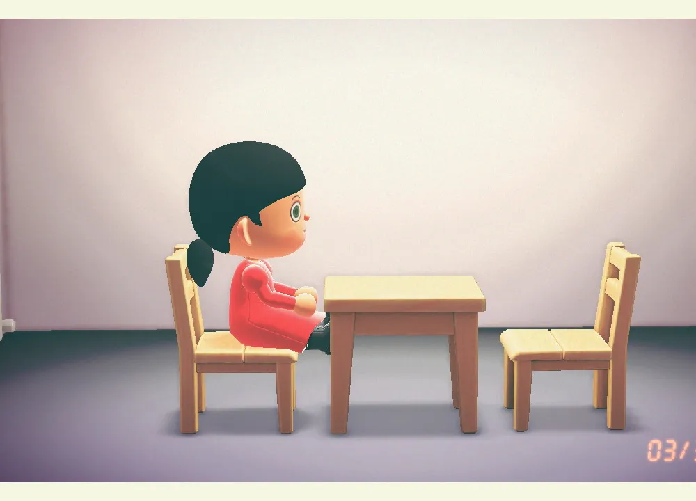
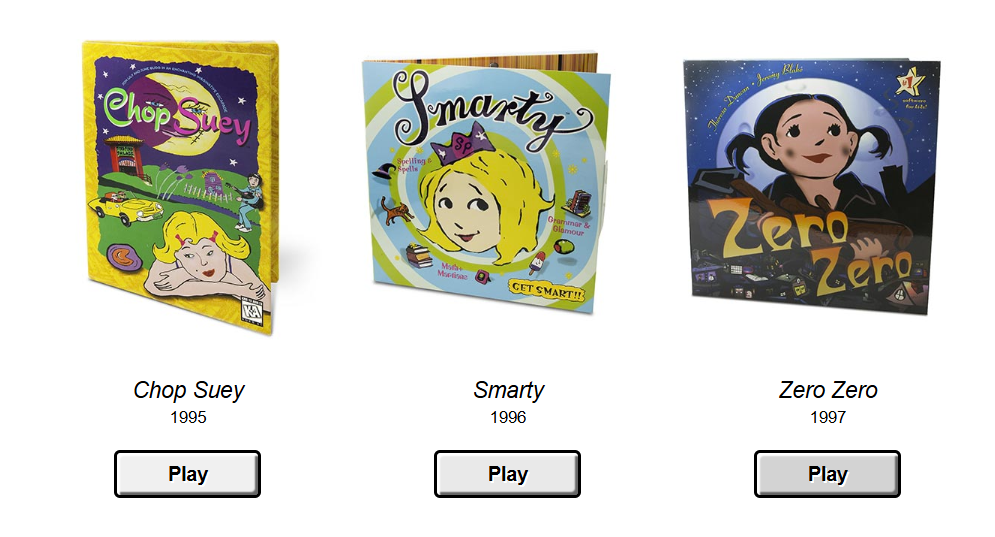

Artifacts of a Digital Childhood
Exhibition curated by Hayley Amisano ˖°❀⋆.ೃ࿔*:･
The internet and video games have long been spaces of play, creativity, and nostalgia. With this project, I intend to explore the aesthetics and emotions tied to early digital experiences, focusing on the pixelated charm of MS Paint, the cozy world-building of Animal Crossing, and the simplicity of classic Nintendo games. As an early 2000s child, I grew up expressing myself through digital art—creating drawings on MS Paint, sketching on Flipnote Studio, and chatting through PictoChat on my Nintendo. These spaces felt limitless, offering creativity unbounded by technical skill. Through this exhibition, I aim to evoke digital nostalgia, tapping into a collective memory of childhood exploration and the joy of early online and gaming experiences.
Animal Crossing Art Museum by Shing Yin Khor (2020)
This project beautifully taps into the nostalgic feeling of Animal Crossing, a game that defined many early 2000s childhood experiences. It also bridges the gap between digital art creation in the game and real-world artistic practices, making it a perfect fit for the theme of digital nostalgia.
The Theresa Duncan CD-ROMs by Theresa Duncan (1995, 1996, 1997)
The Theresa Duncan CD-ROMs features three 90s feminist video games: Chop Suey, Smarty, and Zero Zero. These games broke away from typical “girls’ games” by offering creative, interactive worlds. They tap into digital nostalgia, reviving early digital storytelling and childhood exploration through forgotten CD-ROMs now playable in a browser, fitting into the theme of digital nostalgia.
Cameron's World by Cameron Askin (1994-2009)

This website was created as a sort of love letter to the older internet, featuring nostalgic graphics that aren't seen as frequently today. This fits perfectly into the theme of digital nostalgia, reminding me of graphics I grew up with in the 2000s as a kid.